1. Project Overview & Problem Statement
Addressing campus property recovery challenges through sound software engineering principles.
The Campus Problem
Misplaced personal belongings (student IDs, laptops, keys, backpacks, calculators) are common across university grounds. Current informal solutions—such as unstructured social media posts, scattered departmental front desks, or paper pin-boards—suffer from severe fragmentation. Crucially, when items are listed publicly with all visible details, dishonest individuals can easily claim valuable items they do not own.
The CampusFind Solution
CampusFind implements a centralized catalog with a Two-Tier Disclosure Policy. Public users can view general item attributes (title, category, exterior color, location found) to identify their lost property. However, the finder also enters a confidential private clue (e.g., hidden mark, engraving, pocket contents) that is withheld from public tables. A claimant must independently describe this secret clue before staff authorize release.
Key Architectural Distinction: Private Claim Verification
Unlike generic student-record CRUD projects, CampusFind incorporates real-world business constraints. By strictly separating public catalog queries from confidential verification clues in the service and presentation layers, the system demonstrates the core Software Engineering principle of Information Hiding.
2. Core Functional Capabilities
Engineered for realistic student use, high clarity, and zero external runtime dependencies.
Report Lost & Found
Standardized intake form supporting LOST and FOUND classifications across 8 standard categories. Captures location, reporter contact, and confidential verification clues for found items.
Public Search & Filter
Real-time multi-criteria filtering by keyword, item category, report type, and resolution status. The custom table model rigorously excludes private clues from public view.
Claim Submission
Students file ownership claims against open found items, submitting their contact information and detailed secret proof. Validates target item status before accepting claims into PENDING status.
Staff Review & Decision
Demonstration admin console presenting a side-by-side comparison of the founder's confidential clue against the claimant's answer, enabling staff to accept or reject claims with recorded remarks.
Lifecycle Auto-Resolution
Accepting a claim transitions the item status from OPEN to RESOLVED and automatically marks competing pending claims as REJECTED with an explanatory notice.
Local File Persistence
Records are persisted locally in human-readable CSV files (data/items.csv and data/claims.csv).
If files are absent on first launch, initial demonstration data is automatically seeded.
3. Interface Prototype Showcase
Java Swing desktop graphical user interface with responsive tabbed workflow.
Tab 1: Browse & Search Items
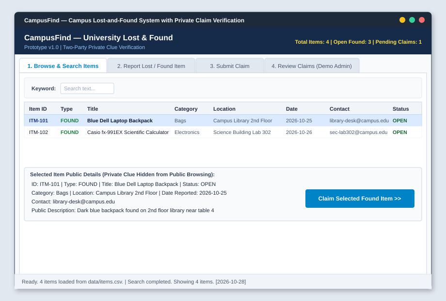
Tab 2: Report Lost or Found Item
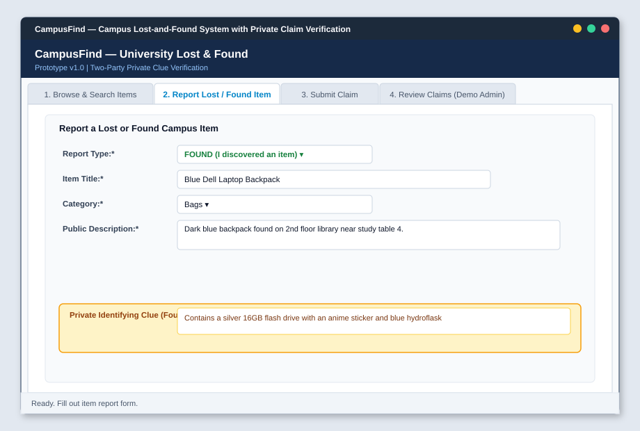
Tab 3: Submit Ownership Claim
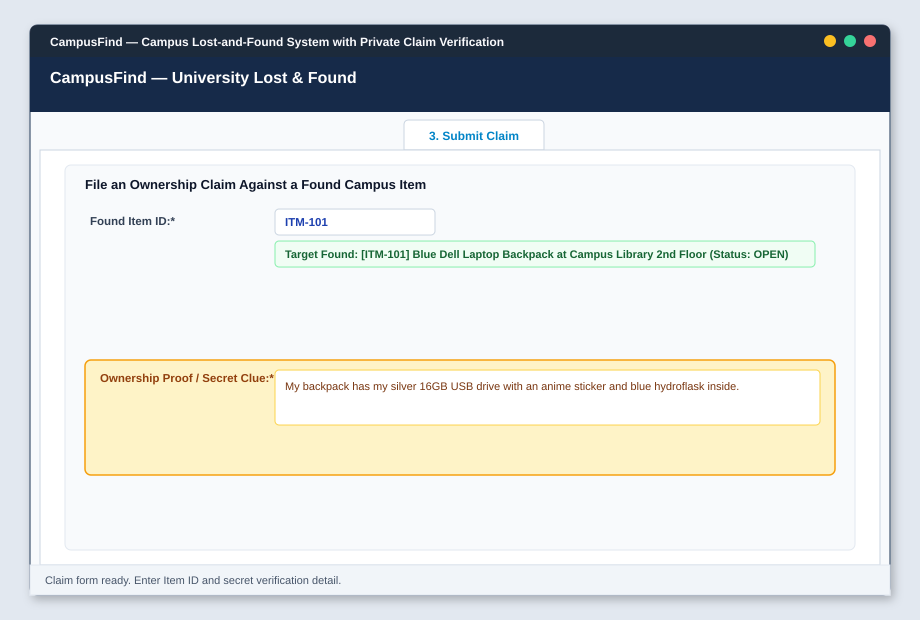
Tab 4: Staff Review & Verification (Demo Admin)
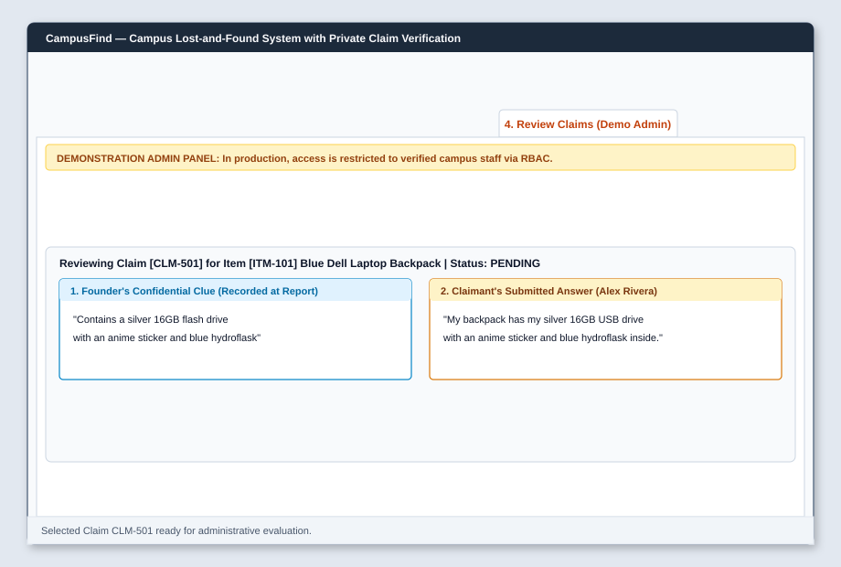
4. Software Engineering & UML Diagrams
All six required design models representing system flows, use cases, activities, data structures, and classes.
Data Flow Diagram (DFD) — Level 0 Context
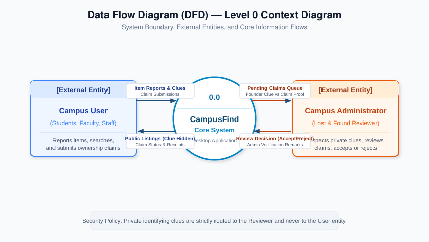
Data Flow Diagram (DFD) — Level 1 Decomposition
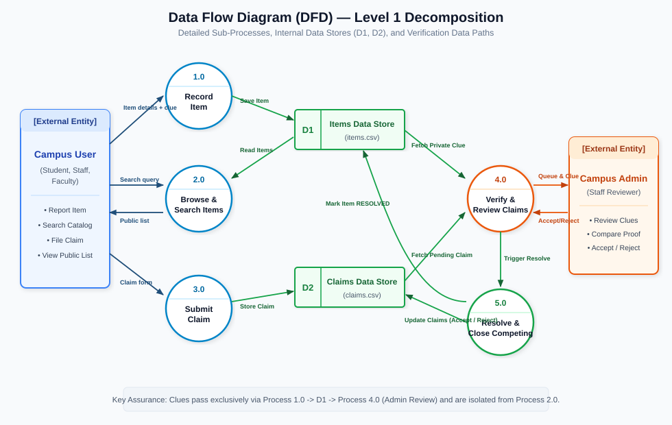
Use Case Diagram
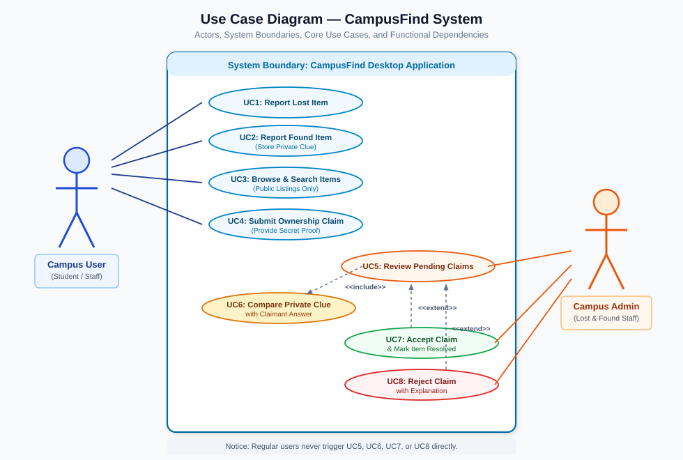
Activity Diagram (Swimlanes)
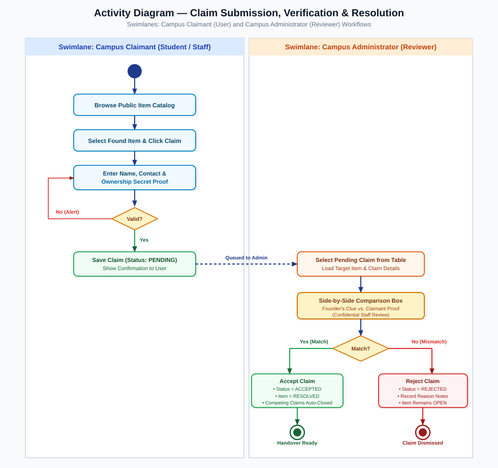
Entity Relationship Diagram (ERD)
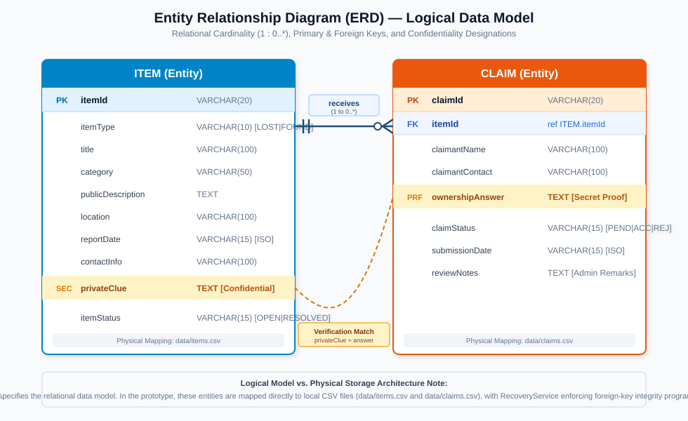
UML Class Diagram (7 Source Classes)
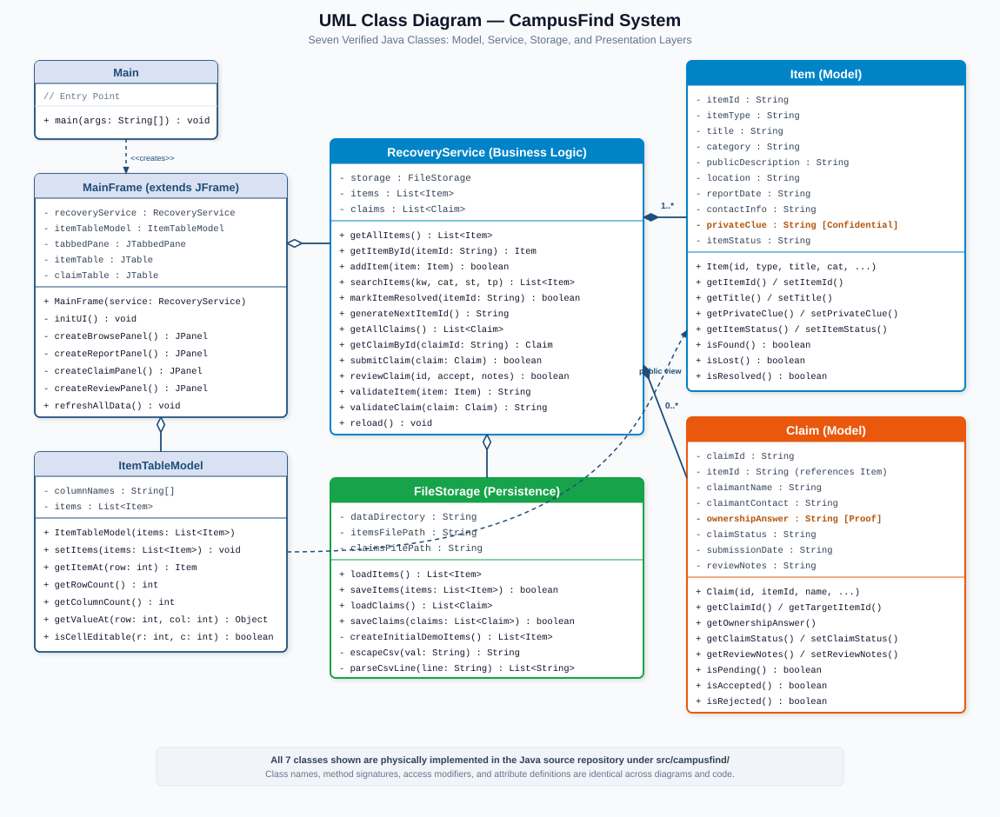
UML Object Diagram (Runtime Instance Snapshot)
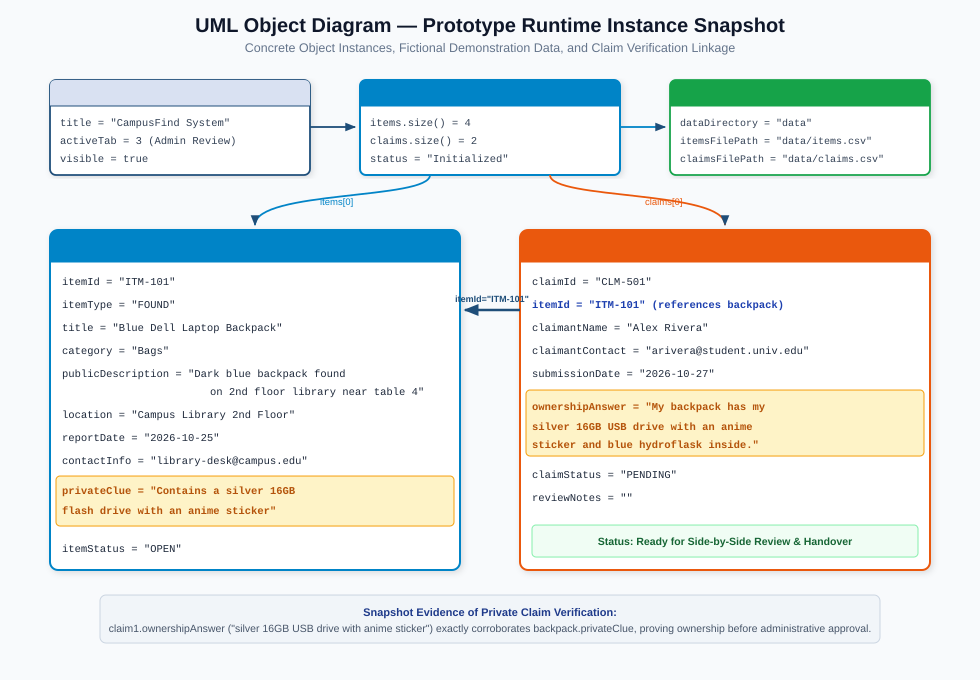
5. Quality Assurance & Automated Verification
Headless automated test runner verifying 100% of business logic, security constraints, and persistence.
| Test ID | Test Case Description | Target Module | Result Status |
|---|---|---|---|
| TC-01 | Automatic Demo Data Seeding on Empty Storage | FileStorage.java |
PASS (Automated) |
| TC-02 | Record Lost Item with Valid Attributes | RecoveryService.java |
PASS (Automated) |
| TC-03 | Record Found Item with Confidential Private Clue | RecoveryService.java |
PASS (Automated) |
| TC-04 | Information Hiding Verification (Private Clue Hidden in TableModel) | ItemTableModel.java |
PASS (Automated) |
| TC-05 | Multi-Criteria Search & Filter (Keyword, Category, Type, Status) | RecoveryService.java |
PASS (Automated) |
| TC-06 | Submit Valid Ownership Claim for Found Item | RecoveryService.java |
PASS (Automated) |
| TC-07 | Validation Interception (Reject Incomplete Fields or Invalid Item ID) | RecoveryService.java |
PASS (Automated) |
| TC-08 | Review and Reject Claim with Explanation Remarks | RecoveryService.java |
PASS (Automated) |
| TC-09 | Review and Accept Claim (Auto-Resolve Item & Auto-Reject Competing Claims) | RecoveryService.java |
PASS (Automated) |
| TC-10 | Local CSV File Storage & Instance Reload Data Integrity | FileStorage.java |
PASS (Automated) |
6. How to Compile & Run the Prototype
Follow these standard commands in any terminal with JDK 8+ installed.
Step 1: Compile All Java Classes
javac -d bin src/campusfind/*.java
Step 2: Run the Desktop GUI Application
java -cp bin campusfind.Main
Step 3: Run the Automated Verification Test Suite
java -cp bin campusfind.CampusFindTestRunner